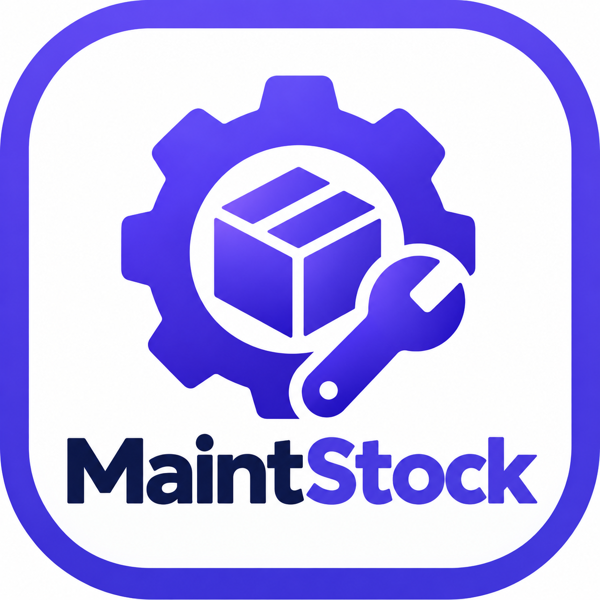

Logiciel de gestion des équipements et du stock de pièces de rechange pour le service de maintenance de l'Hôpital de Zone de Mènontin.
Télécharger En savoir plusWindows 10 et 11 — 64 bits
Enregistrez et suivez tous les équipements de l'hôpital : désignation, marque, modèle, numéro de série, service d'affectation, état.
Gérez les pièces compatibles avec chaque type d'équipement, par désignation, marque ou modèle précis.
Entrées et sorties tracées, quantités disponibles, seuils minimaux, alertes automatiques en cas de rupture ou de stock faible.
Chaque mouvement enregistre la date, l'heure, l'utilisateur, l'équipement cible et le motif. Historique filtrable.
Du besoin identifié à la réception : suivez vos commandes, enregistrez les livraisons, générez automatiquement les entrées de stock.
Vue synthétique des équipements, des références de pièces, des ruptures et des stocks faibles en un coup d'œil.
Version 0.1.0 — Application desktop hors ligne, aucune connexion internet requise.
Télécharger l'installateur
Nécessite Windows 10 ou 11, 64 bits.
Pour recevoir automatiquement les futures mises à jour, laissez le logiciel vérifier au lancement.